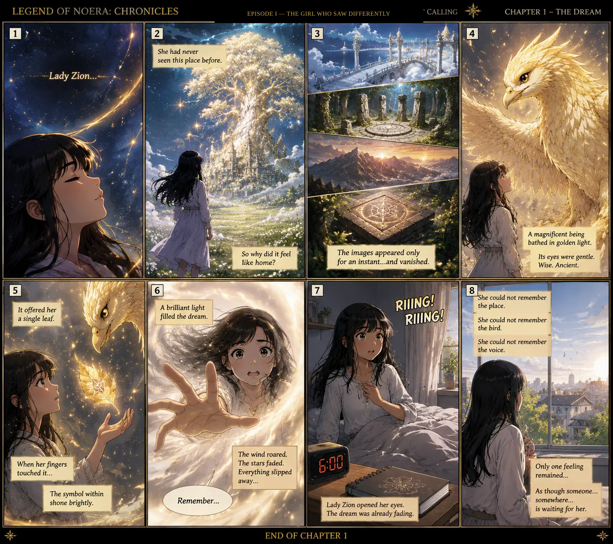
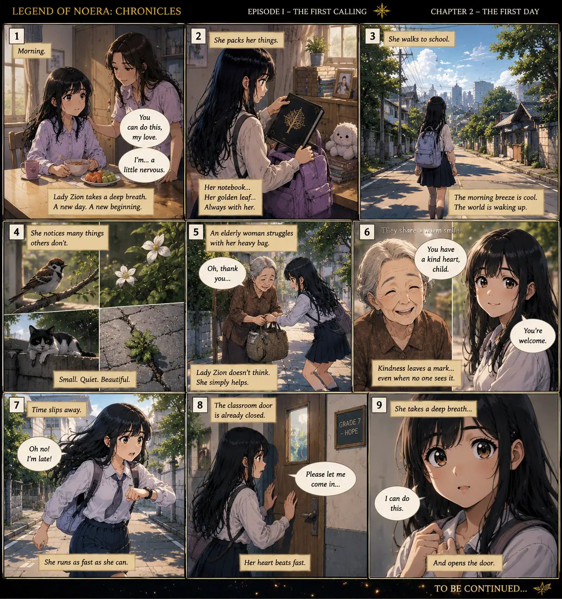
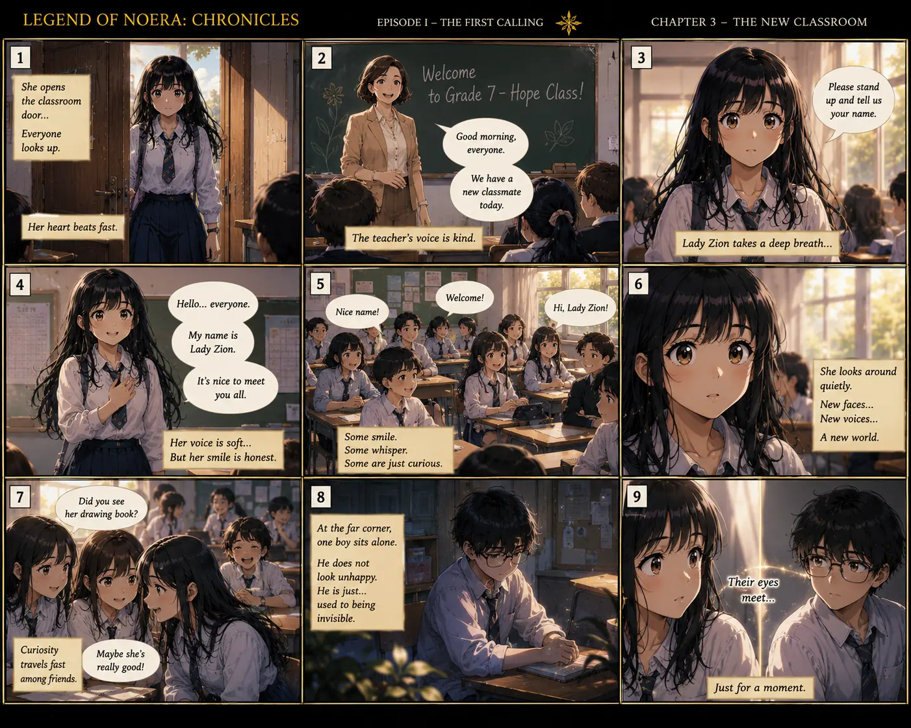
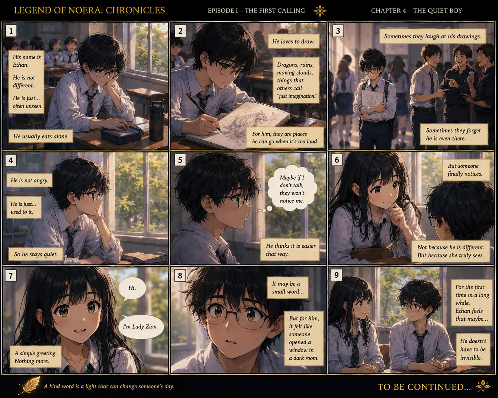
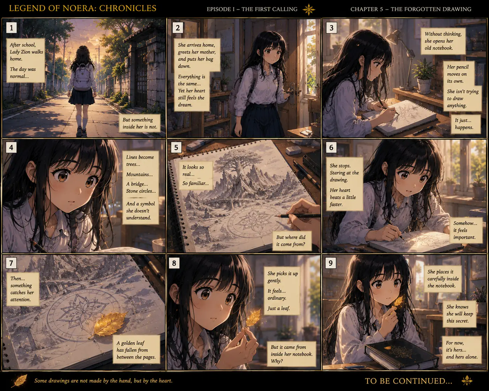
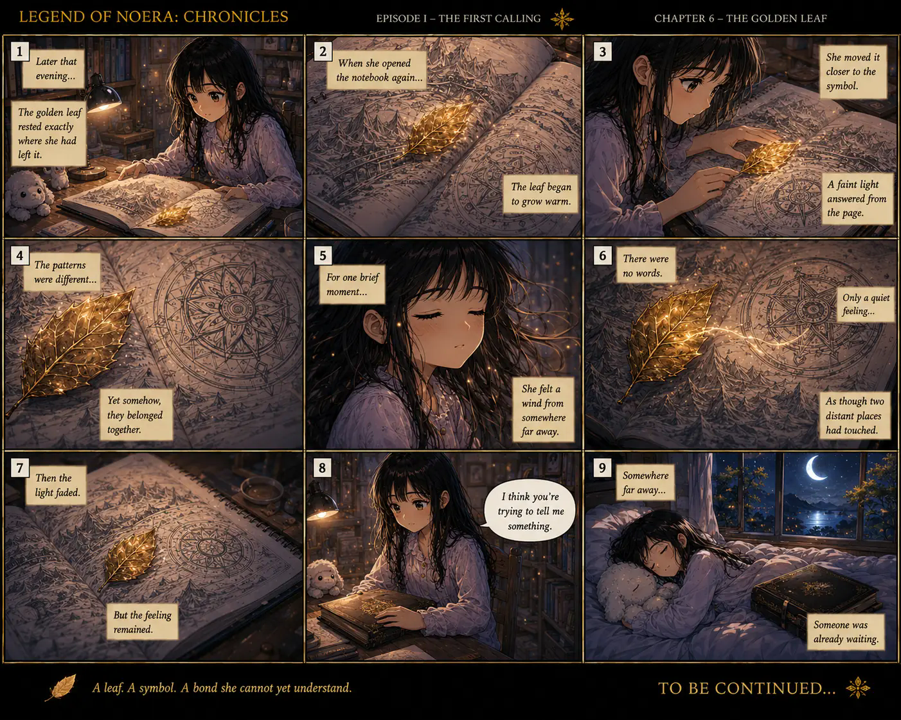
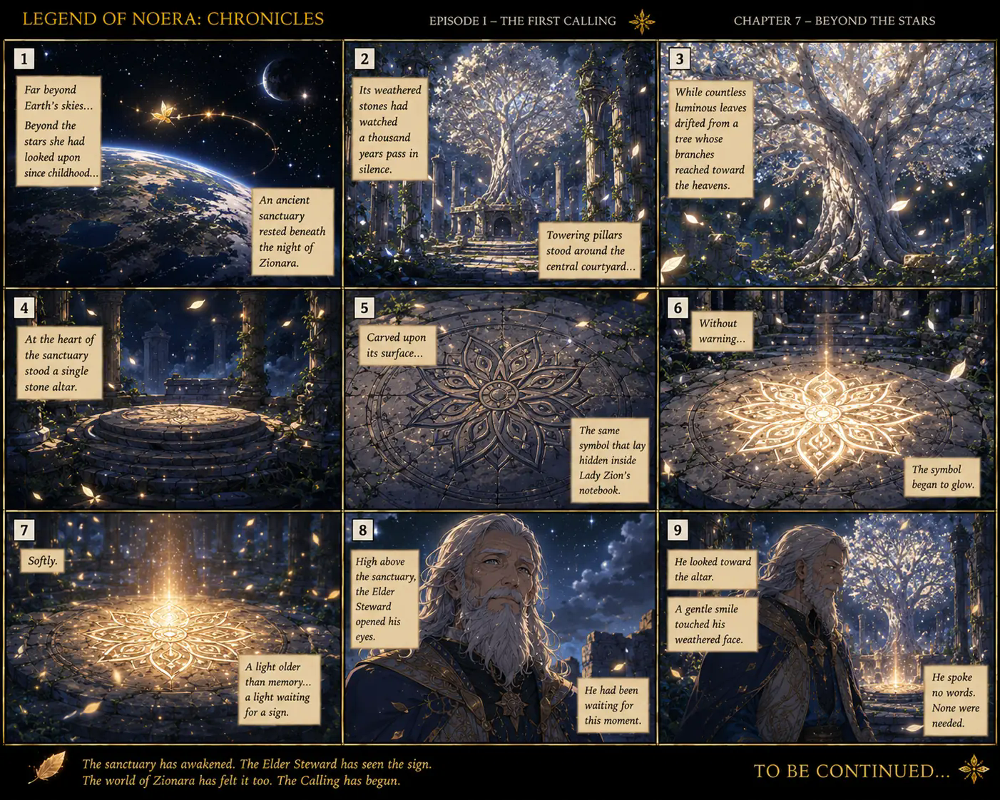
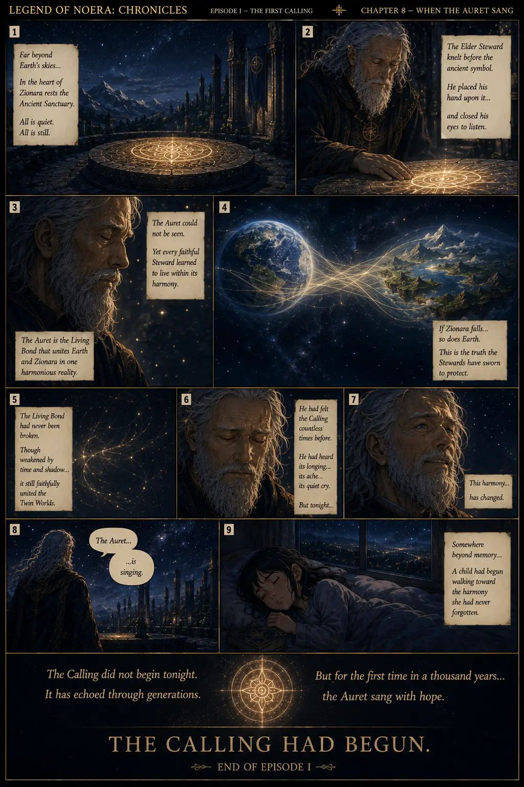

SEASON I — THE AWAKENING
EPISODE I
The Girl Who Saw Differently
“Some journeys begin with a single step. This one begins with a single heart.”
Lady Zion has always experienced the world differently. On her first days at school, she notices what others overlook, offers kindness where no one else stops, and begins having dreams she cannot explain.
As fragments of an impossible world slowly find their way into her notebook, an Elder Steward in a distant land senses that the Living Bond has begun to sing with renewed hope.
8 Chapters15–20 MinutesComplete Episode
Journey Through This Episode
01 The Dream02 The First Day03 The New Classroom04 The Quiet Boy05 The Forgotten Drawing06 The Golden Leaf07 Beyond the Stars08 When the Auret Sang
← Previous
Choose a chapter
01 · The Dream
02 · The First Day
03 · The New Classroom
04 · The Quiet Boy
05 · The Forgotten Drawing
06 · The Golden Leaf
07 · Beyond the Stars
08 · When the Auret Sang
Next →
Chapter 1 of 8
EPISODE I · CHAPTER 1
The Dream Lady Zion receives her clearest glimpse of Zionara—and awakens with only the feeling that someone, somewhere, is waiting for her.

Phone Edition Scroll down and read one panel at a time.
❧ END OF CHAPTER 1
EPISODE I · CHAPTER 2
The First Day On her first day of high school, Lady Zion steadies herself for Grade 7, where an ordinary act of kindness quietly reveals the heart of who she is.

EPISODE I · CHAPTER 3
The New Classroom Lady Zion steps into Grade 7–Hope, finds the courage to introduce herself, and notices one quiet classmate whom everyone else has learned not to see.

EPISODE I · CHAPTER 4
The Quiet Boy Lady Zion notices Ethan, an overlooked classmate whose drawings protect a private world, and offers the small kindness of truly seeing him.

EPISODE I · CHAPTER 5
The Forgotten Drawing Back home, Lady Zion draws a world she cannot remember and discovers a golden leaf hidden inside her notebook.

EPISODE I · CHAPTER 6
The Golden Leaf The leaf responds to the mysterious symbol and lets Lady Zion feel, for one brief moment, the invisible bond between two distant worlds.

EPISODE I · CHAPTER 7
Beyond the Stars Across the Living Bond, the matching symbol awakens within an ancient sanctuary, and an Elder Steward recognizes the sign he has awaited.

EPISODE I · CHAPTER 8
When the Auret Sang The Elder Steward listens as the invisible Living Bond changes, and Lady Zion begins walking toward a harmony she has never truly forgotten.

END OF EPISODE I
✓
Reading Status Episode I Complete
The Girl Who Saw Differently is complete.
Lady Zion's awakening has begun.
Return to Season I